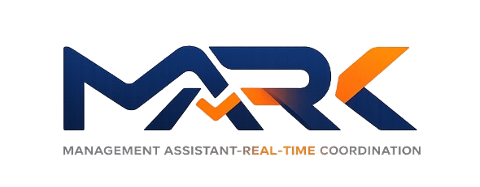

Platform Koordinasi ProjectMewujudkan koordinasi project yang lebih tertib, responsif, dan meyakinkan.
MARK Manajemen Assistant Realtime Koordination mendukung tim dalam menjaga kesinambungan kerja dari perencanaan hingga evaluasi. Seluruh pihak dapat memantau progres, prioritas, potensi hambatan, dan arah tindak lanjut dari satu referensi yang sama, sehingga koordinasi tidak lagi bergantung pada percakapan yang tercecer atau pelaporan manual yang terlambat.
Dasbor lintas peran
Alur kerja real-time
Monitoring dan pelaporan
Nyaman di berbagai perangkat
Pusat Kendali MARK
Pratinjau area kendali MARK dengan bahasa visual yang selaras dengan identitas brand.
Project, tugas, aktivitas tim, dan prioritas bergerak lebih selaras dalam satu alur kerja.
Pimpinan, project lead, dan tim operasional dapat membaca kondisi lebih cepat tanpa menunggu rangkuman manual.
Perubahan, tindak lanjut, dan ritme kerja harian lebih mudah dijaga ketika tim bergerak cepat.
Tampilan dasbor dan ringkasan progres membantu tim tampil lebih percaya diri di hadapan client maupun stakeholder.
Ikhtisar Produk
Seluruh informasi penting diringkas dalam tab yang mudah dijelajahi.
Halaman ini disusun untuk menonjolkan manfaat MARK secara lebih formal dan terarah. Pengunjung dapat memahami nilai utama platform, melihat gambaran halaman penting, dan menemukan informasi kontak dengan rapi.
Nilai yang langsung terasa
MARK tidak berhenti pada pencatatan pekerjaan. Platform ini membantu arah kerja, progres, dan koordinasi lintas peran menjadi lebih hidup serta lebih mudah dibaca.
- Seluruh pihak lebih cepat memahami apa yang sedang berjalan.
- Potensi hambatan lebih cepat terlihat sebelum membesar.
- Forum pembaruan progres menjadi lebih fokus karena data telah tertata.
Relevan untuk tim delivery
Tim yang menangani banyak project memerlukan alat yang nyaman dipakai setiap hari sekaligus layak dibaca pada level manajemen. MARK hadir di antara dua kebutuhan tersebut.
- Nyaman digunakan oleh tim inti untuk menjalankan pekerjaan harian.
- Cukup rapi untuk dibawa ke pimpinan maupun client.
- Membantu menjaga tempo kerja saat jumlah project terus bertambah.
Cakupan yang mendukung pertumbuhan
Dari kickoff, pembagian kerja, pemantauan milestone, aktivitas tim, pengelolaan perubahan, hingga evaluasi progres, seluruhnya bergerak dalam ritme yang sama.
- Tim tidak perlu terus-menerus berpindah antara banyak alat.
- Informasi penting lebih mudah ditelusuri saat dibutuhkan.
- Pertumbuhan project menjadi lebih mudah dikendalikan.
01
Pusat kendali project
Seluruh pihak dapat melihat arah, progres, dan prioritas dari satu tempat yang lebih mudah dipahami.
02
Koordinasi lintas fungsi
Setiap peran mempertahankan fokus kerjanya masing-masing tanpa kehilangan konteks project secara keseluruhan.
03
Ritme kerja yang lebih tertib
Tugas bergerak, agenda berubah, dan tindak lanjut menumpuk dapat ditangani dengan lebih terukur.
04
Visibilitas progres yang konsisten
Perkembangan tim, milestone, dan kondisi project dapat dibaca lebih cepat sebelum muncul kejutan.
05
Ringkasan yang siap dipresentasikan
Dasbor dan visual progres membantu tim menyampaikan pembaruan dengan lebih rapi kepada pimpinan atau stakeholder.
06
Siap mendampingi tim yang bertumbuh
Ketika project, user, dan kebutuhan koordinasi semakin banyak, MARK tetap relevan sebagai titik temu kerja.
Dashboard Eksekutif
Tampilan ini menunjukkan seberapa cepat MARK membantu pimpinan atau project lead memahami kondisi kerja tanpa tenggelam dalam detail yang tidak mendesak.
- Angka penting langsung terlihat sejak layar pertama.
- Ringkasan progres terasa lebih mudah dipahami.
- Sangat kuat sebagai tampilan pembuka saat presentasi.
Papan Kerja Harian
Bagian ini menunjukkan bagaimana MARK menjaga ritme kerja harian tetap bergerak tanpa membuat prioritas tercecer atau progres hilang di tengah jalan.
- Alur kerja terasa hidup dari backlog hingga selesai.
- Pemilik tugas dan status review lebih mudah dibaca.
- Sangat sesuai untuk daily standup dan kontrol kerja yang cepat.
Backlog
Inisiasi
Lingkup implementasi awal untuk dasbor client.
Rencana
Pemetaan PIC dan target sprint pekan ini.
In Progress
Aktif
Pengerjaan visual pelaporan dan penyaringan project.
Review
Review
Sinkronisasi tindak lanjut dan penelaahan hasil sebelum melanjutkan.
Done
Selesai
Board real-time, monitoring, dan visibilitas aktivitas sudah tersedia.
Monitoring dan Pelaporan
Bagian ini memperlihatkan bahwa MARK bukan hanya alat kerja harian, tetapi juga alat baca kondisi project yang lebih tenang dan lebih tajam.
- Membantu PM dan koordinator memahami kondisi lebih cepat.
- Visual progres lebih siap dibawa ke forum evaluasi.
- Mengurangi ketergantungan pada rangkuman manual terpisah.
Rasio Jenis Tugas
Sprint per Project
Beban Kerja per User
Aktivitas Tim yang Terdokumentasi
Bagian ini menunjukkan bahwa koordinasi tidak berhenti setelah tugas diberikan. Perubahan, catatan, dan jejak keputusan tetap mudah diikuti.
- Aktivitas dan perubahan tersusun lebih runtut.
- Membantu handover dan evaluasi tanpa drama pencarian data.
- Memudahkan tim menjelaskan apa yang terjadi dan mengapa.
Ringkasan Tugas
Prioritas TinggiReview
Aktivitas Terbaru
Status dipindah ke reviewKoordinator menelaah hasil dan menambahkan catatan penyempurnaan.
Tenggat disesuaikanPenyesuaian dilakukan setelah dependensi dari modul lain teridentifikasi.
Masukan stakeholder tercatatUmpan balik langsung masuk sebagai bagian dari jejak aktivitas.
Pusat Kontrol Operasional
Halaman ini menunjukkan bahwa MARK tetap rapi ketika digunakan oleh banyak orang, banyak project, dan banyak kebutuhan koordinasi dalam satu organisasi.
- Menguatkan kesan bahwa sistem ini tertata dan terarah.
- Membantu tim bertumbuh tanpa kehilangan kontrol.
- Memberi rasa aman saat aplikasi digunakan lebih luas.
Pengaturan Aplikasi
Matriks Akses
Akses ringkasan untuk project lead
Visibilitas aktivitas tim
Pengendalian alur persetujuan
Mengapa MARK layak dipertimbangkan
MARK bukan sekadar tempat menaruh pekerjaan, melainkan platform yang membantu menjaga arah kerja tim tetap selaras dari hari ke hari.
Koordinasi lebih tenang
Seluruh pihak memiliki referensi kerja yang sama, sehingga miskomunikasi lebih mudah ditekan.
Visibilitas lebih jelas
Kondisi project, beban tim, dan prioritas tidak lagi terasa abu-abu.
Ritme kerja lebih terjaga
Tim lebih mudah bergerak konsisten dari hari ke hari tanpa kehilangan arah.
Lebih siap di depan stakeholder
Pembaruan progres terasa lebih rapi, profesional, dan meyakinkan.
Mengapa relevan bagi organisasi yang bertumbuh
MARK nyaman dipakai untuk kerja harian, namun tetap cukup rapi untuk menjelaskan kondisi project pada level manajemen maupun client.
Arah kerja lebih jelas
Prioritas dan progres lebih mudah dipahami tanpa harus menebak-nebak.
Perpindahan kerja lebih halus
Tugas, review, dan tindak lanjut tidak mudah terputus di tengah jalan.
Nyaman untuk tim yang bertumbuh
Saat project dan user bertambah, kontrol kerja tetap terasa rapi.
Lebih mantap untuk dipresentasikan
Ringkasan dan visual progres membantu pembaruan terasa lebih mantap.
Pertanyaan umum
Apa yang paling terasa setelah menggunakan MARK?
Bukan hanya pekerjaan yang lebih rapi, tetapi koordinasi lintas peran menjadi lebih mudah, progres lebih mudah dibaca, dan keputusan lebih cepat diambil.
Siapa yang paling diuntungkan oleh MARK?
Tim delivery, software house, unit operasional, maupun organisasi yang menangani banyak project dan memerlukan visibilitas kerja yang lebih baik.
Mengapa halaman ini tersedia dalam dua bahasa?
Agar materi presentasi lebih fleksibel digunakan untuk kebutuhan internal maupun eksternal, baik dalam Bahasa Indonesia maupun English.
Keunggulan yang lebih terasa
- Membuat kerja tim terasa lebih tertata tanpa menambah beban yang tidak perlu.
- Membantu pimpinan membaca kondisi project lebih cepat dan dengan kejernihan yang lebih baik.
- Menjaga koordinasi antar tim tetap selaras saat pekerjaan bergerak cepat.
- Memberi kesan lebih siap dan profesional saat progres dibahas dengan client atau stakeholder.